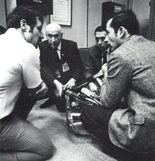

| The lightning bolt that struck Apollo 12 aloft also hit the crane an platform of the mobile launcher. |
|
| The lightning bolt that struck Apollo 12 aloft also hit the crane an platform of the mobile launcher. |

|
| During the Apollo 13 crisis the Mission Control directors discussed possible landing recovery options. Because of the unique configuration (the LM still attached to the CM) new procedures leading to reentry were developed. Ten phone lines were open between Mission Control and experts at the Grumman plant. Engineers in Downey, Calif., where Odyssey was built, ran emergency problems through Computers and at MIT a team worked through the night on the guidance system and prepared new trajectories. Perseverance and ingenuity were rewarded with a safe landing in the Pacific less than 4 miles from the USS Iwo Jima. |
|  | When the Apollo 14 crew was unable, after repeated attempts, to dock with the lunar module, the Operations Team was faced with the prospect of having to abort the mission. In order to work out new procedures, Mission Control hastily located a docking probe and drogue. Flight Controller John Llewellyn (left) discusses possible solutions with Bob Gilruth, George Abbey, and John Young. The crew docked successfully with the new procedure, and had no trouble docking again. |